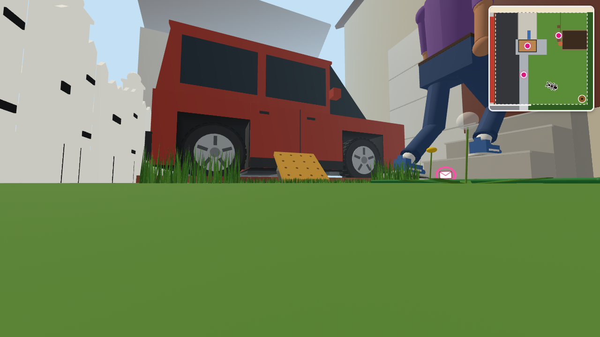
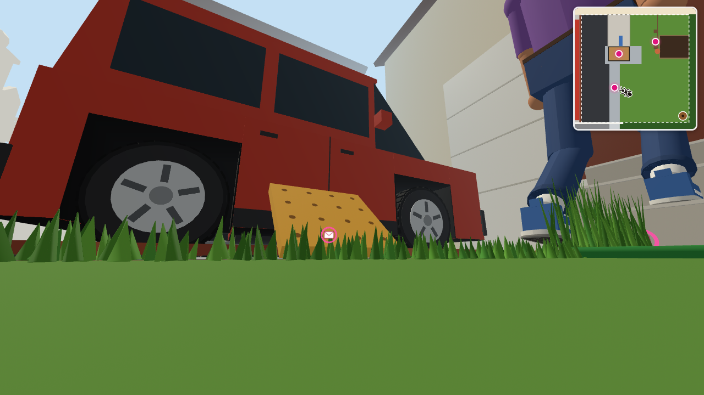

지금 — 크래커가 잔디 뒤에 완전히 숨음시안 A: 3배 — 약 18cm 사각 크래커, 돌에 40° 걸쳐 앞면이 개미 쪽을 봄

시안 B: 4배 — 약 24cm, 더 크고 멀리서도 잘 보임

시안 A를 가까이서 — 노란 구멍 뚫린 크래커가 확실히 보임
함께 바뀌는 것: 크래커 색을 조금 더 밝은 황금색으로 · 보도 옆 잔디 중 크래커 근처만 짧게 · 분홍 고리를 커진 크래커 위로 올림 · 크래커가 길을 막는 범위(부딪힘)도 크기에 맞춤. 그대로: 크래커 위치, 카드 글 "A Cracker Too Big", 걷는 속도, 다른 장소, 안내 페이지.